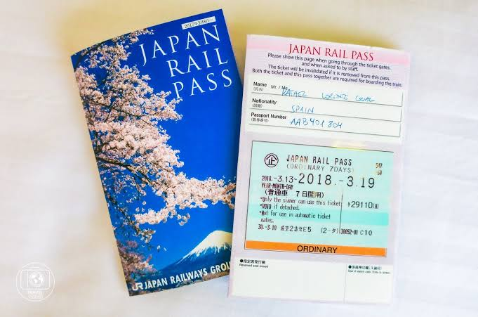
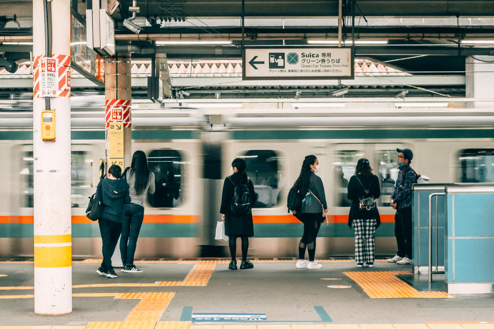
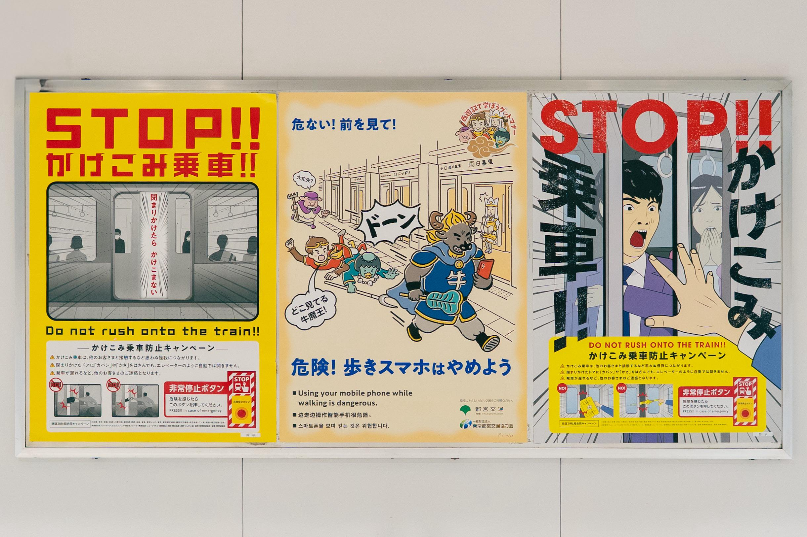

Uso del JR Pass
Todo lo que necesitas saber para activar y aprovechar al máximo tu pase de tren ilimitado.

Estaciones Principales
Guía para orientarte en gigantescas estaciones como Tokyo Station o Shin-Osaka.

Etiqueta en el Tren
Normas de comportamiento básico: silencio, uso de móviles y manejo de equipaje a bordo.